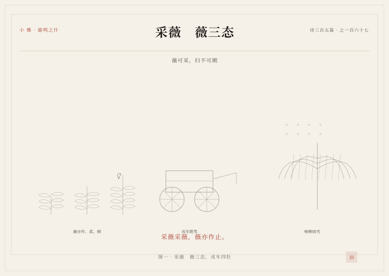
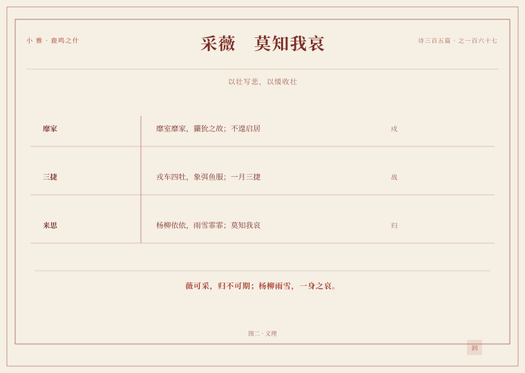

第一百六十七篇 采薇
小雅 · 鹿鸣之什 SJ167
朗读 · 普通话
依经文原文朗读，章次不读出；配古琴底乐，不改速、不加拖腔。全库同一音色（豆包 TTS），非播音员录制。
一 解题
诗三判：
- 谁在说：戍役之卒。采薇于野，曰归曰归；王事靡盬，玁狁之故；末章以杨柳雨雪收。
- 说什么事：六章。前三章以薇之「作、柔、刚」写时序，中二章写戎车、四牡、象弭鱼服，末章写往与来。
- 为何编在此：天保祝君，采薇遣戍；内治既毕，外患方起。
小雅由燕享入征役，是「治内而治外」。
《毛序》：「《采薇》，遣戍役也。文王之时，西有昆夷之患，北有玁狁之难。以天子之命，命将率遣戍役，以守卫中国。故歌《采薇》以遣之，《出车》以劳还，《杕杜》以勤归也。」
朱子《诗集传》：「兴也。薇，野豌豆。作，初生。柔，始长。刚，既成。莫，晚。靡，无。玁狁，北狄也。启居，跪居也。聘，问也。阳，十月也。疚，病。来，归也。」四章：「尔，华盛貌。常，常棣。路，戎路。业业，壮也。」五章：「骙骙，强也。腓，庇也。象弭，弓弭以象骨。鱼服，鱼皮为矢服。棘，急也。」
本库的看法：《采薇》不是一首反战诗，是一首「以战守家」的诗。
前三章「靡室靡家，玁狁之故」，把出征之由说得极明：不是好战，是不得已。中二章写军容之盛，不是炫武，是写「岂敢定居」。末章「昔我往矣，杨柳依依；今我来思，雨雪霏霏」，以景代情，不控诉，不夸功，只把一身之哀放在天地之间。
须辨：薇是野豌豆，不是蔷薇；作柔刚是三个阶段，不是三种草；玁狁是古族名，不是匈奴的同名；象弭是象牙弓弭，不是象牙弓；鱼服是鱼皮箭袋，不是鱼服衣。断语：薇可采，归不可期；杨柳雨雪，一身之哀。
先辨五事：「薇」是野豌豆，不是蔷薇；「作、柔、刚」是薇的三个阶段，不是三种草；「玁狁」是古族名，不是匈奴；「象弭」是象牙弓弭，不是象牙弓；「鱼服」是鱼皮箭袋，不是鱼皮衣。
二 经文
第一章
采薇采薇，薇亦作止。曰归曰归，岁亦莫止。
靡室靡家，玁狁之故。不遑启居，玁狁之故。
第二章
采薇采薇，薇亦柔止。曰归曰归，心亦忧止。
忧心烈烈，载饥载渴。我戍未定，靡使归聘。
第三章
采薇采薇，薇亦刚止。曰归曰归，岁亦阳止。
王事靡盬，不遑启处。忧心孔疚，我行不来。
第四章
彼尔维何？维常之华。彼路斯何？君子之车。
戎车既驾，四牡业业。岂敢定居？一月三捷。
第五章
驾彼四牡，四牡骙骙。君子所依，小人所腓。
四牡翼翼，象弭鱼服。岂不日戒？玁狁孔棘。
第六章
昔我往矣，杨柳依依。今我来思，雨雪霏霏。
行道迟迟，载渴载饥。我心伤悲，莫知我哀。
三 韵读
- 一章：薇、归、莫、家、故、居，微、鱼交错。声长而怨。
- 二章：薇、归、忧、烈、渴、聘，微、幽、质交错。声急。
- 三章：薇、归、阳、处、疚、来，微、阳、之交错。声沉。
- 四章：华、车、业、捷，鱼、叶相叶。声壮。
- 五章：骙、依、腓、翼、服、戒、棘，微、职相叶。声严。
- 六章：依、霏、迟、饥、悲、哀，微、脂相叶。声缓而哀。
读法：前三章同一「采薇」，只换「作、柔、刚」，时序愈进，归期愈远；四、五章忽壮，是「以壮写悲」；六章忽缓，是「以缓收壮」。一壮一缓，悲乃见。
四 字义与名物
- 薇：野豌豆。作：初生。止：语助。曰归：说要归。莫：晚。靡：无。玁狁：北方古族。遑：暇。启居：跪坐安居。
- 柔：始长柔嫩。烈烈：忧盛。载饥载渴：又饥又渴。戍：驻守。定：定止。聘：问、探问。
- 刚：已长坚硬。阳：十月。盬：止。启处：安居。疚：病。来：归。
- 尔：华盛貌。常：常棣。路：戎路，兵车。君子：将帅。业业：壮健。定居：安居。三捷：三次胜仗。
- 骙骙：强盛。依：依乘。腓：庇覆。翼翼：整齐。象弭：象牙弓弭。鱼服：鱼皮箭袋。日戒：日日警戒。棘：急。
- 昔：从前。依依：柳枝柔弱。思：语助。霏霏：雪盛。迟迟：缓行。莫知：无人知。
五 今译
一章：采薇采薇，薇刚出生。说要归说要归，一年已晚。没有家室，因玁狁之故。不能安居，因玁狁之故。
二章：采薇采薇，薇已柔嫩。说要归说要归，心已忧。忧心烈烈，又饥又渴。戍守未定，无人回去问讯。
三章：采薇采薇，薇已坚硬。说要归说要归，十月已到。王事不止，不能安居。忧心大病，我行不得归。
四章：那盛开的是什么？是常棣的花。那车是什么？是将帅的车。戎车已驾，四牡壮健。岂敢安居？一月三捷。
五章：驾那四牡，四牡强盛。将帅所乘，士卒所庇。四牡整齐，象牙弓弭，鱼皮箭袋。岂不日日警戒？玁狁甚急。
六章：从前我往，杨柳依依。如今我归，雨雪霏霏。行道迟迟，又渴又饥。我心伤悲，无人知我哀。
六 章旨
- 一章：薇作岁莫，是「时晚」；靡室靡家，是「因」；以「玁狁之故」答「何以不归」。
- 二章：薇柔心忧，是「忧深」；戍未定，是「归无期」；归期不由己。
- 三章：薇刚岁阳，是「岁尽」；我行不来，是「归不得」；三章三进，归愈远。
- 四章：常华戎车，是「军容」；一月三捷，是「战事」；以壮压悲。
- 五章：四牡象弭，是「戒备」；玁狁孔棘，是「急」；军容愈盛，心愈不敢松。
- 六章：杨柳雨雪，是「往来」；莫知我哀，是「独」；以景收情，哀在言外。
七 诗教
- 战为守家：诗把「靡室靡家」与「玁狁之故」并置，说明战非好战；知战之由，方知哀之战。
- 壮不掩悲：四、五章军容甚壮，六章忽归；不以壮压哀，也不以哀废壮。
- 哀不控诉：「莫知我哀」四字，只说自己，不责君上；怨而不怒，是诗之厚。
八 分寸与边界
- 不把「薇」读成蔷薇：薇是野豌豆；读成蔷薇，则「采」无食。
- 不把「作柔刚」读成三种草：是薇的三个阶段；读成三草，则时序乱。
- 不把「玁狁」直接等同匈奴：玁狁是古族名；直接等同，则时空错。
- 不把「象弭」读成象牙弓：弭是弓端；读成弓，则器失其制。
- 不把「鱼服」读成鱼皮衣：服是箭袋；读成衣，则军容失实。
九 存疑
- 诗旨：毛序「遣戍役」，朱子从之；一说戍卒自述。本库从遣戍，兼取自述之辞。
- 「三捷」：毛传「捷，胜也」；一说「捷，接」。从胜。
- 「君子」「小人」：君子指将帅，小人指士卒；从毛郑，不作道德褒贬。
- 「我行不来」：一来作「归」，一来作「慰」。从归。
- 「昔我往矣」四句：一说诗人代戍卒言，一说戍卒自言。两存。
十 跨典
- 《论语》「足食足兵」；此篇「靡室靡家」而「玁狁之故」，是兵以卫食。
- 《孟子》「君子小人」；此篇君子所依、小人所腓，是军旅之分。
- 《诗经·小雅·出车》「王事多难」；同是征役，一遣一劳。
十一 双卡与图
六对：
| 薇（野豌豆） |
薇（蔷薇） |
| 作柔刚（三阶段） |
作柔刚（三种草） |
| 玁狁（古族名） |
玁狁（匈奴） |
| 象弭（象牙弓弭） |
象弭（象牙弓） |
| 鱼服（鱼皮箭袋） |
鱼服（鱼皮衣） |
| 三捷（三胜） |
三捷（三接） |

图一 · 采薇 薇三态，戎车四牡

图二 · 采薇 杨柳雨雪，莫知我哀